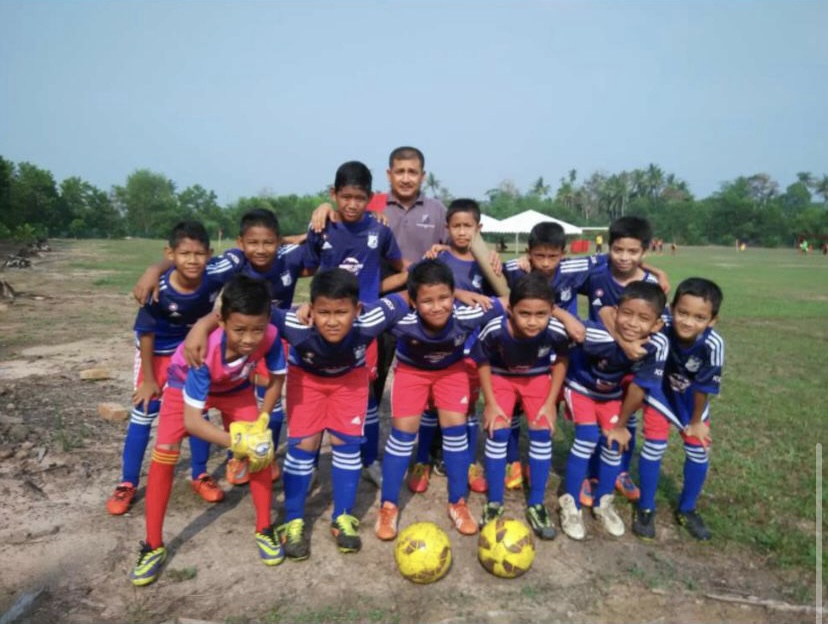
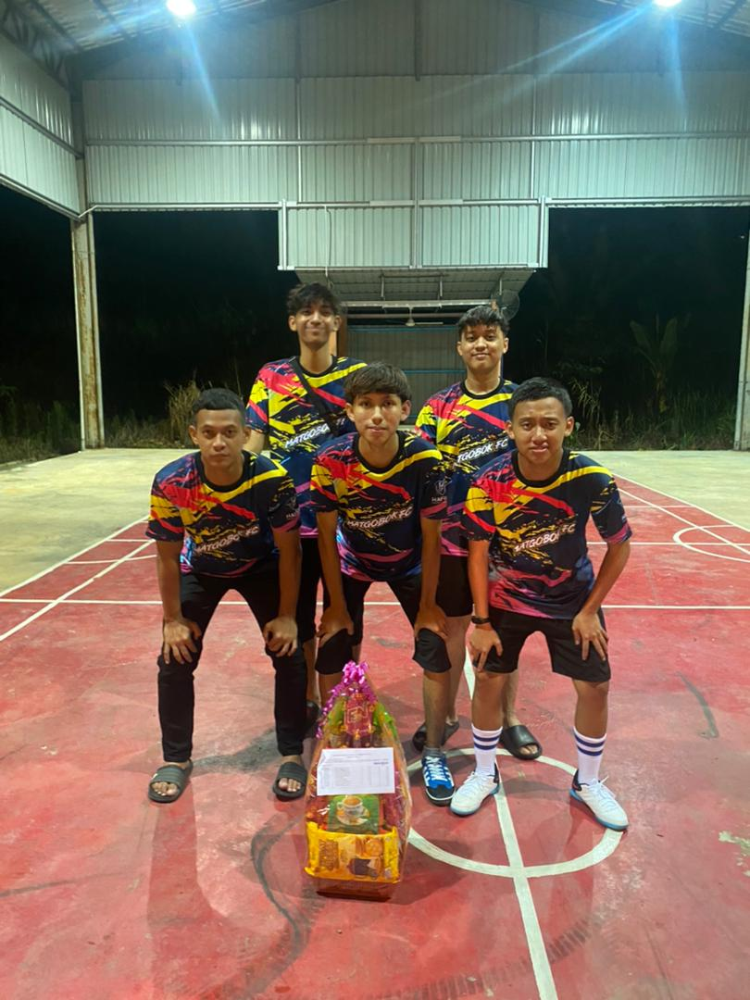
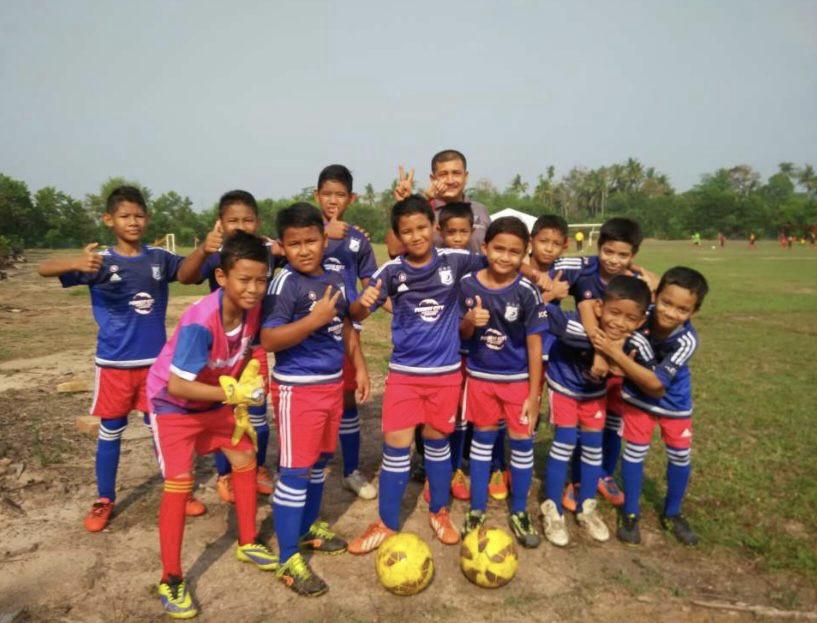
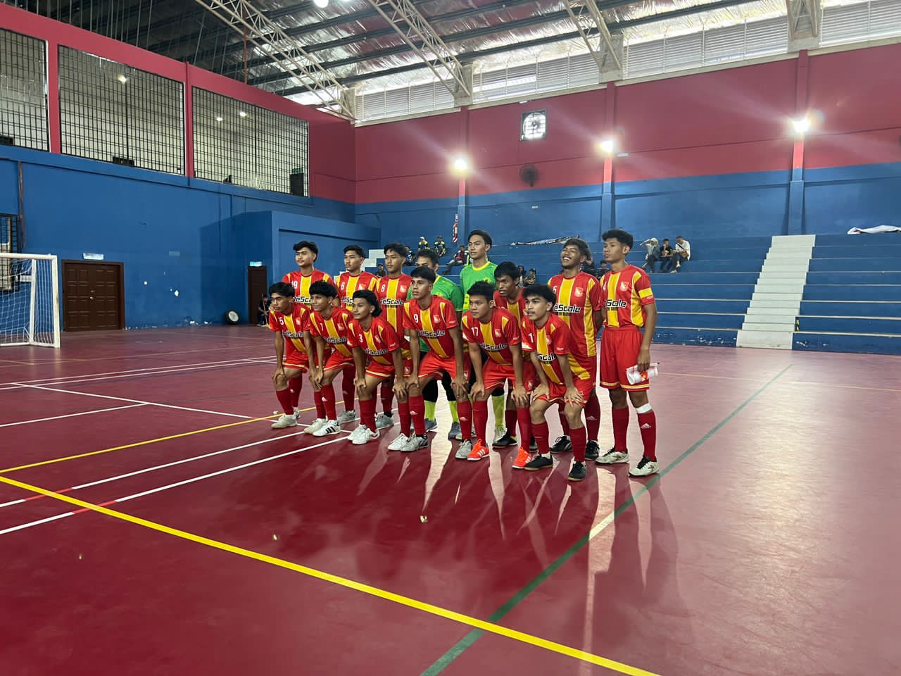
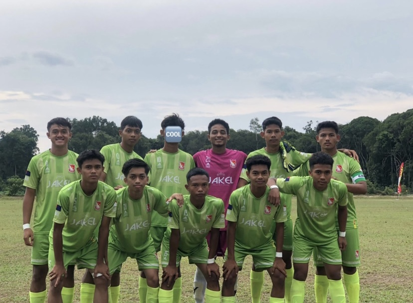
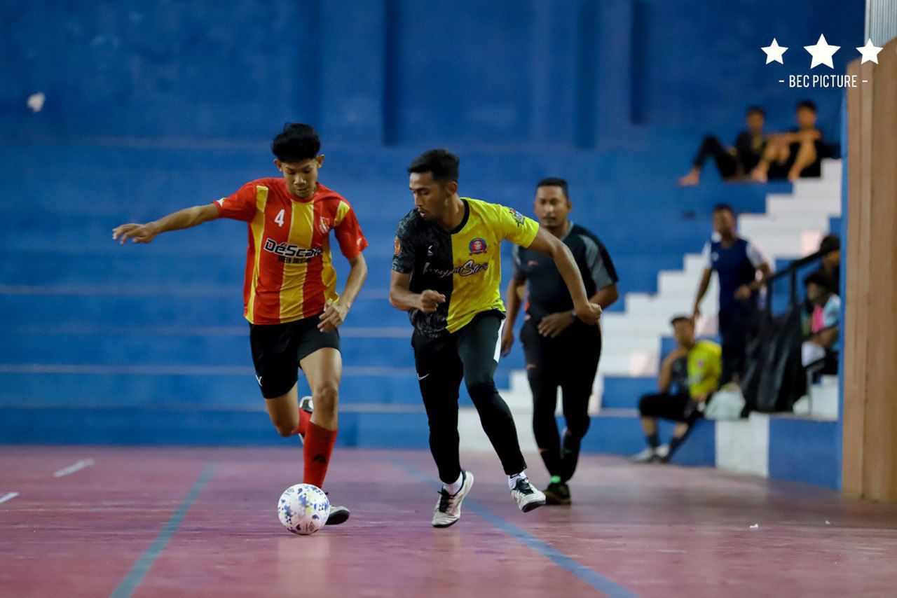

I have been playing football since I was 10 years old.I have participated in many competitions or leagues during my school days such as Liga Johor and Piala Mahkota. I love playing football because it keeps me active, challenges my skills, and brings me closer to my team.This is not just a hobby but also my ambition to become a football player.
|  |  |
|  |  |  |  |